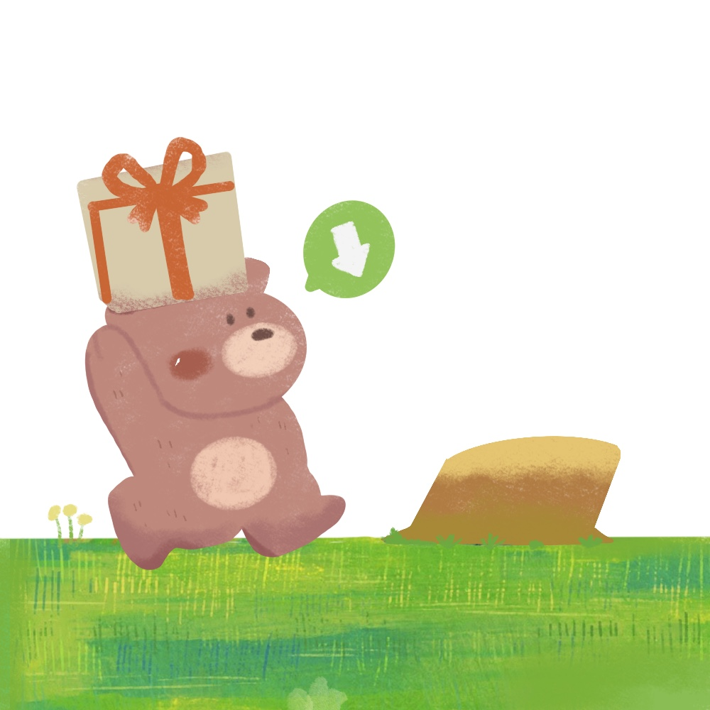

ILLSTRATOR , DESIGNER

CHEA BEEN
WORKS
View Moreprofile
yeomcheabeen
저는 일러스트레이터로 시작해,
사용자 경험을 고민하는 UI 디자이너로 성장해왔습니다.
3년간의 디자인 경험을 바탕으로 감성적인 터치와 실용적인 설계를 동시에 담아내는 작업을 지향합니다.
작은 디테일 속에서도 사용자의 감정을 움직이고,
귀여운 무드 속에 분명한 목적과 흐름을 담는 걸 좋아해요.
코딩과 디자인의 경계를 넘나들며,
감각적이면서도 논리적인 결과물을 만들어가고 있습니다.
오늘도 ‘사용자가 오래 머무르고 싶은 경험’을 만들기 위해,
조금씩 성장 중입니다.